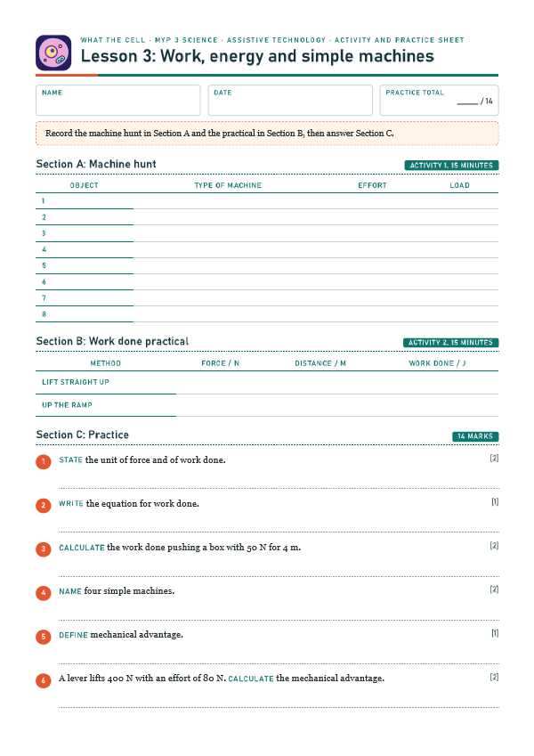

By the end of the lesson you can
- Define work done and its unit
- Calculate work done = force × distance
- Identify the five simple machines
- Explain that machines change force, not the work done
Keys: arrows or a presentation clicker move the slides, F for full screen. Slides with a red dot have a video or simulation.
Videos (all 5 minutes or less)
- 4:33
Simple Machines
EarthPen. While you watch: Name the simple machines shown. Slide 9.
Simulations
- Lab
Print and practise

Activity and practice sheet
Used in the lesson’s activities, with practice questions. Your teacher has the answers.
Download (PDF)Lesson 3 slides
All 16 slides in one file, to read again or print. The video buttons on the slides open YouTube.
Download the slides (PDF)Revising? The Revision tab on the unit page has the unit notes and review.
Class activity pack
Everything to print for the lesson’s activities: picture cards, sorting mats, station cards with their kit lists, and the teacher’s set-up notes. Print it before class.
Download the activity pack (PDF)Notes: Work, energy and simple machines
force
A push or pull, measured in newtons (N). For example: lifting a bag.
work done
Energy transferred when a force moves something. For example: W = F × d, in joules (J).
simple machine
A device that changes the size or direction of a force. For example: lever, ramp, pulley.
load
The force the machine works against. For example: the weight lifted.
effort
The force you put in. For example: your push.
mechanical advantage
Load / effort: how many times a machine multiplies force. For example: a lever with MA 4.
Key words
| force | push or pull, newtons |
|---|---|
| work done | force × distance, joules |
| load | force against the machine |
| effort | force you put in |
| mechanical advantage | load / effort |